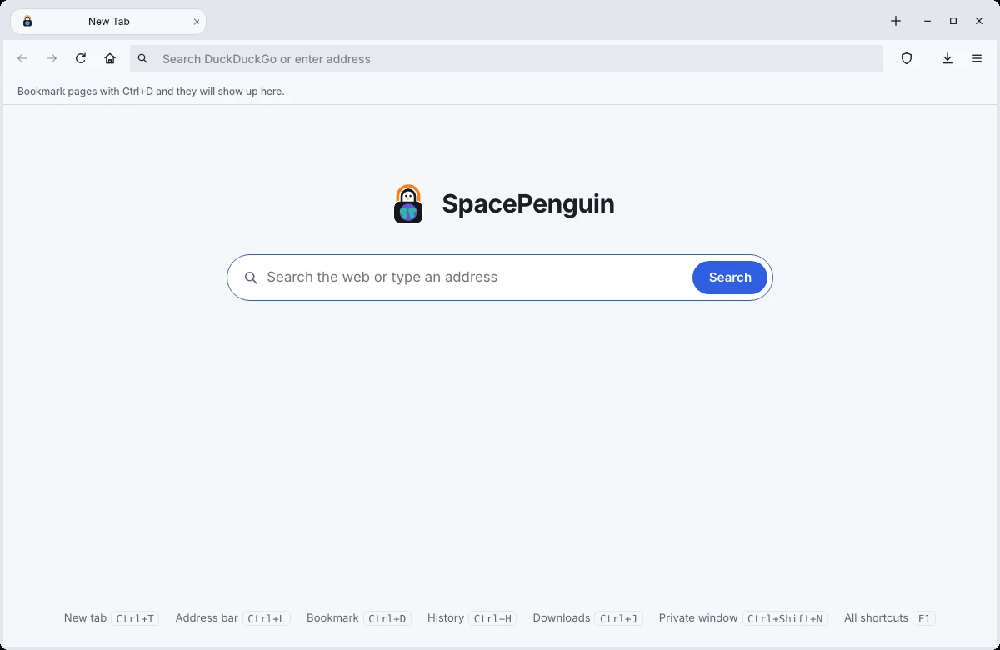

Ads blocked, YouTube too
Ad networks and trackers are stopped before they load. On YouTube the ad schedule is taken out of the player's own data, so videos start without the ad — and an ad that slips through is muted and skipped.
SpacePenguin is a small, fast browser built on Qt and Chromium. It blocks ads and trackers — YouTube's included — skips sponsor segments, and runs on Windows, macOS, Linux, school Chromebooks — and Android and iPhone.
Download View on GitHub Free and open source · GPLv3 · Pre-release

Ad networks and trackers are stopped before they load. On YouTube the ad schedule is taken out of the player's own data, so videos start without the ad — and an ad that slips through is muted and skipped.
Sponsor reads, self-promotion and "subscribe" reminders inside videos are skipped with SponsorBlock's community timestamps — without telling anyone which video you watch.
Tabs share one row with the window buttons, or move to a panel down the side, as in Edge and Firefox. Group them by name and colour, and collapse a group out of the way.
A private window writes nothing to disk — no history, cookies or cache — and forgets everything when it closes.
On 4 GB laptops and Chromebooks it shares processes between tabs and switches on Chromium's low-end mode by itself. The window is up in about a third of a second.
The SpacePenguin Store searches Greasy Fork and OpenUserJS in one place, and adds colour themes for the browser. Extensions ask before they run, and their settings open from the puzzle-piece menu.
It offers to remember your logins and fills them in when you ask. Sites ask before using your camera, location or notifications, and sign-in pop-ups open in a window of their own.
Pages run in Chromium's sandbox. If your system blocks it, SpacePenguin tells you why and how to fix it, instead of crashing or staying quiet.
about:version shows what the browser is doing: the sandbox, the blocker,
how it tuned itself for your device. about: pages cover history,
downloads and more.
Every package is built and launch-tested automatically on each platform. Packages are published on the Releases page with each tagged version. Until the first one is out, every build is on the build page (open the latest run, then Artifacts), or build it yourself in a few commands.
An installer for just you (no administrator rights) or everyone, plus a portable zip.
Get the installerOne universal app in a DMG: drag it to Applications.
Get the DMGAn AppImage that runs on almost any distribution, plus a Flatpak,
.deb, .rpm, Arch package and Nix flake.
A lighter app on your phone's own web engine: tabs and tab groups, bookmarks, history, ad hiding and YouTube sponsor skipping.
Get the APKThe same app as on Android, on Safari's engine. Install the .ipa with
Sideloadly or AltStore
and your own Apple ID — no developer account needed (with a free ID, reinstall every 7 days).
On phones SpacePenguin uses the system's web engine, because Apple and Qt offer no other. It hides ads and skips YouTube ads once they start rather than stopping them from downloading, and has no private tabs. What's different on phones
bash packaging/chromeos/install.sh SpacePenguin-*.AppImage.packaging/arch/PKGBUILD.nix run github:developer1-vd/SpacePenguin.packaging/flatpak/.SpacePenguin runs in ChromeOS's Linux environment, on Intel, AMD and ARM Chromebooks, and tunes itself for 4 GB machines without GPU acceleration.
On a school-managed Chromebook, the school decides whether Linux is allowed. If the setting is missing or greyed out, only the school's admin can turn it on — there is no way around that from the Chromebook.
# download the installer, then run it
curl -fsSLO https://raw.githubusercontent.com/developer1-vd/SpacePenguin/main/packaging/chromeos/install.sh
bash install.shThe installer needs a published release. It checks each download's SHA-256 and won't install a file that doesn't match.
SpacePenguin has no account, no telemetry and no update pings. Apart from the sites you visit, it contacts only:
History, bookmarks and settings stay on your computer:
~/.local/share/SpacePenguin/SpacePenguin~/Library/Application Support/SpacePenguin/SpacePenguin%APPDATA%\SpacePenguin\SpacePenguinPrivate windows keep nothing at all.
One script installs everything — compiler, CMake and Qt 6.8 with QtWebEngine — on Debian, Ubuntu, Fedora, openSUSE, Arch, Alpine, Void, Gentoo, macOS and Windows.
git clone https://github.com/developer1-vd/SpacePenguin
cd SpacePenguin
./install-deps.sh
cmake -B build
cmake --build build --parallel "$(tools/build-jobs.sh)"
./build/SpacePenguingit clone https://github.com/developer1-vd/SpacePenguin
cd SpacePenguin
powershell -ExecutionPolicy Bypass -File install-deps.ps1
cmake -B build
cmake --build build --config Release --parallel 2tools/build-jobs.sh runs only as many compiler jobs as your
free memory allows — each needs about 500 MB, and running too many at once can freeze a
small laptop. Phone apps come from ./build-android.sh (an APK) and, on a Mac,
./build-ios.sh --unsigned (an .ipa to sideload). Packaging scripts for
the AppImage, DMG and Windows installer are described in
BUILD_SCRIPTS.md.
SpacePenguin is young. Expect rough edges, and please report what you find.
Qt's support for Chrome extensions still crashes, so they stay off. Extensions are user scripts from the SpacePenguin Store instead — and the blocker is built in.
Pages render with Chromium through Qt's QtWebEngine, so sites work as they do in Chrome. Security updates follow Qt's releases.
YouTube changes how it delivers ads now and then. If an ad gets through, open an issue.